Parts and Materials Required
- Allen wrench, 2.5 mm
- Allen wrench, 3 mm
- UFD, RFID ANTENNA, YELLOW
Time Required
- 30 minutes
Removal Procedure
- Put on proper PPE.
- Remove all fluid bottles from the Universal Fluid Drawer.
 Remove the Universal Fluid Drawer door panel by removing the three 3 mm screws from the sides of the door.
Remove the Universal Fluid Drawer door panel by removing the three 3 mm screws from the sides of the door.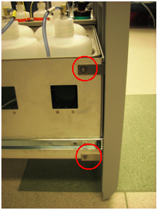
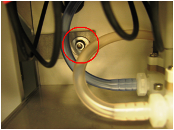
- Using a 2.5 mm Allen wrench, loosen the left and right side screws of the universal fluids holder.
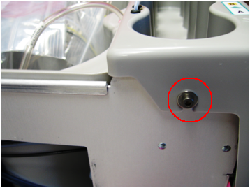
- Slightly lift the small bin cover to access the Universal Fluid Drawer PCB.
- Disconnect the RFID cable from the right side of the Universal Fluid Drawer PCB.
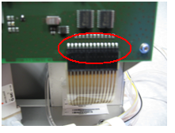
- Unplug the yellow RFID cable from the Universal Fluid Drawer PCB.
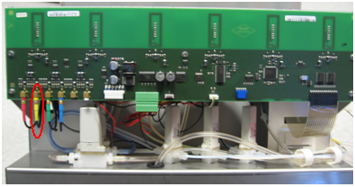
- Push the Magnetic Wash, deactivator, and bleach fluid lines into the Universal Fluid Drawer bin.
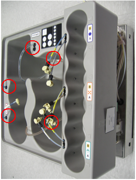
- Shift the small bin so that you can lift the large bin out of the drawer.
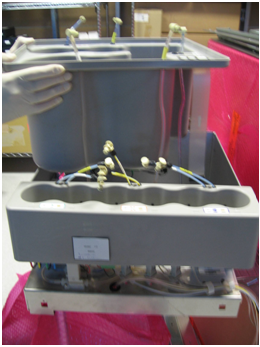
- Release the blue tubing so that the bin can be lifted farther out of the drawer.
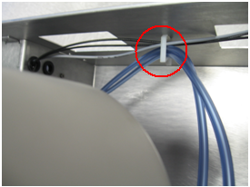
- Locate the yellow RFID antenna on the side wall of the Universal Fluid Drawer.
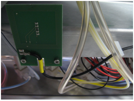
- Using a 2.5 mm Allen wrench, remove the two screws that secure the antenna and remove the antenna.
Replacement Procedure
- Install the yellow RFID antenna using two 2.5 mm screws.
- Route the yellow RFID antenna cable in front of the yellow RFID board and along the front of the Universal Fluid Drawer and through to the front of the universal fluids PCB. Use the existing cable holder to hold the cables in place.
- Lower the large bin back into the Universal Fluid Drawer.
- Plug the yellow RFID antenna cable into the Universal Fluid Drawer PCB.
- Push the RFID cable through the slot and re-attach the RFID cable.
- Fix the bins so that they appear to be sitting flush.
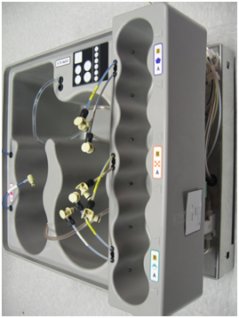
- Gently pull the deactivator, Magnetic Wash, and bleach connectors out of the bin.
- To re-install the Universal Fluid Drawer panel, align the front panel to the two screws on the left side of the Universal Fluid Drawer, and to the one screw on the right side of the drawer.
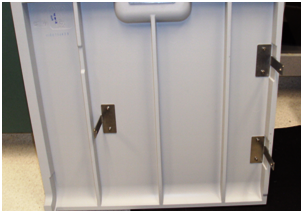
- Using a 3 mm Allen wrench, insert and tighten two 3 mm screws, washers, and lock washers on the left side of the Universal Fluid Drawer.
- Using a 3 mm Allen wrench, insert and tighten one 3 mm screw, washer, and lock washer on the right side of the Universal Fluid Drawer.
Verification
- Start up the Panther System.
- Replace Universal Fluid bottles with new bottles.
- Verify that the system correctly reads bottle ID labels.
- Prime Operation of pumping fluid through tubing to ensure proper and consistent fluid delivery (remove air from the tubing, etc.). the system (see the Panther System Operator's Manual).
 button at the top of the page to send feedback, comments, or change requests.
button at the top of the page to send feedback, comments, or change requests.{kind=link}